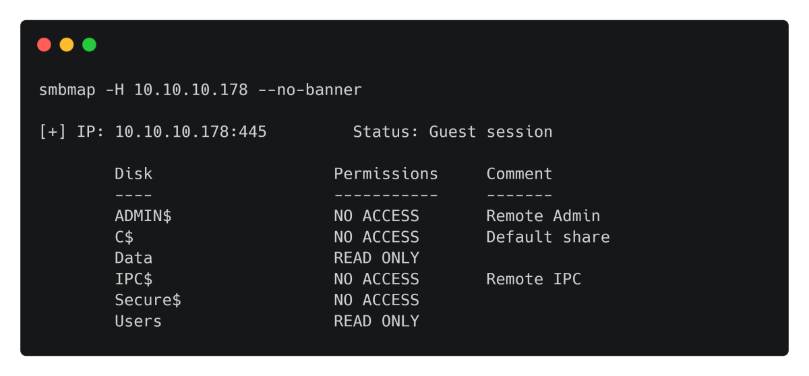
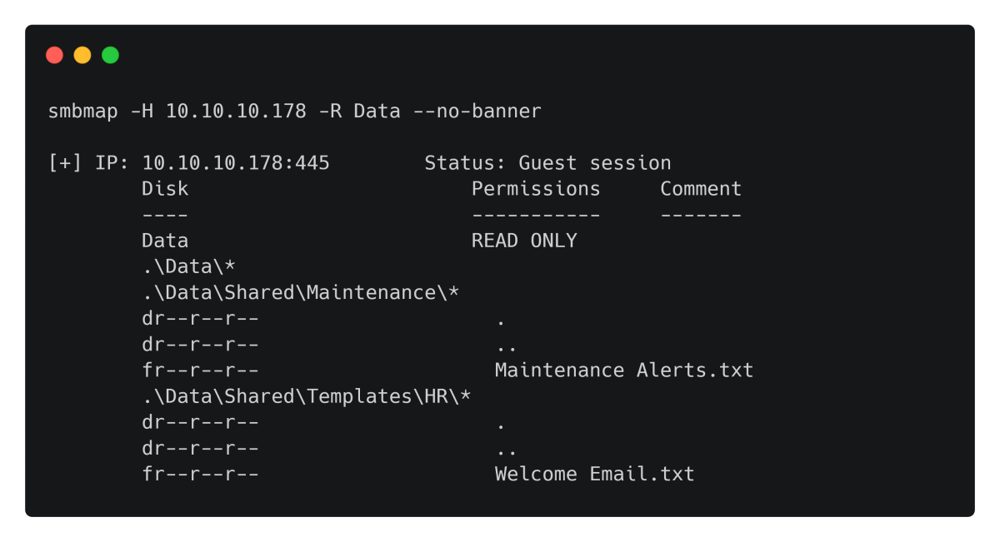
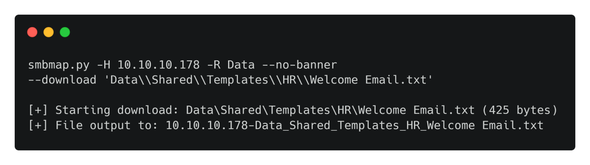
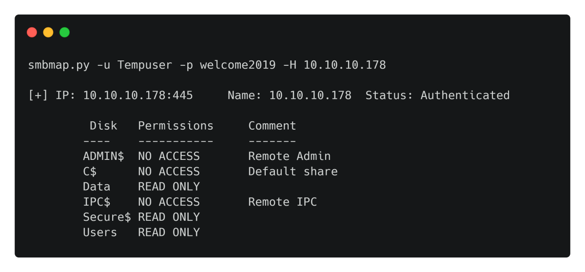
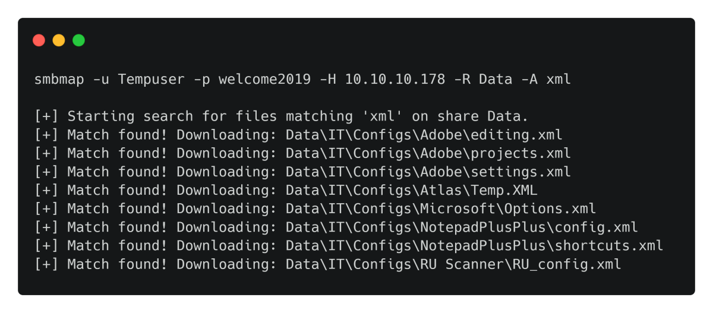
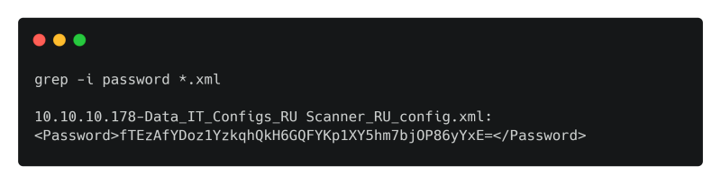

smbmap tool is used to iterate/list/download files in a samba server.
Note: We can see the permissions for each share in this tool. Depending on the user selected.
--no-banner : No particular differences seen as of now.
Official Repo: (Can use --no-banner)
https://github.com/ShawnDEvans/smbmap
Also installed by default in Kali Linux: (Note: Does not use --no-banner)
To List a samba share. (If Guest login required: add the ‘-u guest’ option)

To List a particular share recursively.

To Download a paricular file: --download

To List shares with a particular user:

To Download a particular file type from the share: -A option is used.

Then we search for passwords.

To Emumerate a share once a user credential is known
smbmap -H 10.10.111.3 -u lilyle -p ChangeMe#1234 -R
It Enumerates and lists all accessible shares recursively.